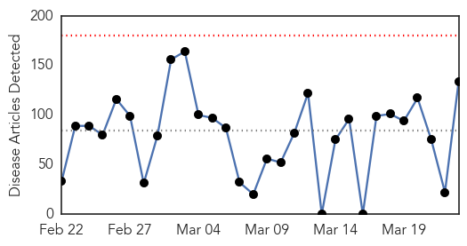
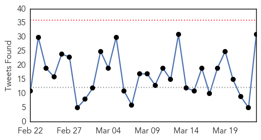
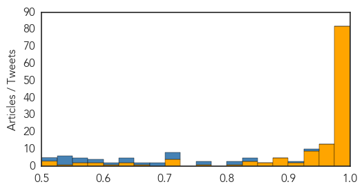
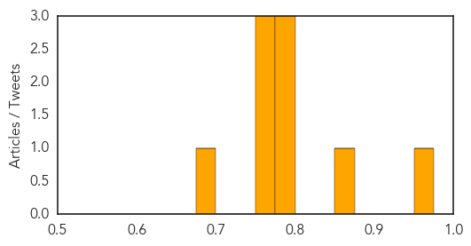

Ebola
30-Day Web Trend
0 alerts, 0 warnings

30-Day Twitter Trend
0 alerts, 0 warnings

Article Locations
Article Confidences
Top Articles:
- 1.000
- Ebola crisis not yet over: Report
- 1.000
- Ebola returns to Liberia, two weeks after discharge of last patient
- 1.000
- Guinea and Sierra Leone tried to cover up Ebola crisis, says Medecins Sans Frontieres
- 1.000
- MSF Accuses World of Failing to Stop Ebola Virus Outbreak
- 1.000
- UPDATE 1-Slow Ebola response cost thousands of lives - MSF - TRFN
- 1.000
- One Year Later, Ebola Outbreak Offers Lessons for Next Epidemic
- 1.000
- Ebola: Pushed to the limit and beyond - MSF report
- 1.000
- Was the Ebola epidemic a "perfect storm"?
- 1.000
- One year on: why Ebola is not yet over in Guinea
- 1.000
- Etobicoke woman returns home after working in Ebola treatment centre
- 1.000
- Liberia reports first new case of Ebola in weeks
- 1.000
- Ebola: North East patients still undergoing treatment as world marks anniversary of outbreak
- 1.000
- Ebola danger 'is far from over'
- 1.000
- Slow Ebola response cost thousands of lives, says MSF
- 1.000
- MSF Accuses World of Failing to Stop Ebola Virus Outbreak
- 1.000
- Slow Ebola response cost thousands of lives: MSF
- 1.000
- New Ebola Case Found In Liberia
- 1.000
- New Ebola Case Found In Liberia
- 1.000
- Ebola virus disease explained: Q&A
- 0.999
- U.N. official: Ebola outbreak will be eradicated by summertime
- 0.999
- Fight against Ebola 'bungled'
- 0.999
- Ebola crisis brutally exposed failures of the aid system, says MSF
- 0.999
- Report Reveals Shortcomings In Global Response To Ebola Crisis
- 0.999
- Ebola warning 'like shouting into a desert'
- 0.999
- one year since outbreak that killed 10,000 declared
- 0.999
- One Year Later, Doctors Without Borders Knocks World Health Organization For Slow Response
- 0.999
- Ebola outbreak an avoidable tragedy and WHO must shoulder much of the blame
- 0.999
- Ebola, epidemics, Sierra Leone, Guinea
- 0.999
- One year on, Ebola still claws at West African nations despite progress
- 0.999
- WHO denies politics swayed Ebola emergency declaration
- 0.999
- UN official Ebola outbreak will be gone by the summer
- 0.999
- Slow Response to Ebola Outbreak Cost Thousands of Lives, Says MSF
- 0.999
- a major setback Damning report from MSF
- 0.999
- WHO denies politics swayed Ebola emergency declaration
- 0.999
- 'World's reponse to Ebola outbreak was too slow'
- 0.998
- Ebola diaries: All in a day’s work
- 0.998
- WHO slow to act on Ebola, doctors group says
- 0.998
- Fortifying for Future Eventuality US to Build Disease Control Center in Liberia
- 0.998
- Ebola and the global response to an epidemic
- 0.998
- Ebola Continues to Punish Survivors One Year After Start of Outbreak
- 0.998
- WHO Ebola diaries: All in a day’s work - Guinea
- 0.998
- Senegal's Health Minister Eyes WHO Top Job After Eliminating Ebola
- 0.997
- Chairty slams WHO over Ebola outbreak
- 0.997
- The New Dawn Liberia
- 0.997
- UN Ebola Mission Head Says Outbreak Will End By August
- 0.997
- One year on: Using words to end Ebola
- 0.997
- Slow Ebola Response Cost Thousands Of Lives, Says Doctors Without Borders
- 0.997
- WHO denies politics swayed Ebola emergency declaration
- 0.997
- The World On Arirang
- 0.996
- Sierra Leone declares nationwide quarantine
Showing top 50 articles...
Top Tweets:
- 0.930
- RT: One year after the World Health Organization declared the Ebola outbreak vaccine trials are under way in Liberia... http…
- 0.910
- Ebola Update: 24842 confirmed probable and suspected cases reported in three most affected countries with 10299 deaths. EbolaResponse
- 0.843
- Patient Hospitalized in L.A. Does Not Have Ebola Public Health Dept. Says - KTLA http://t.co/6pKQQGJ1oU ebola EVD
- 0.841
- Ebola virus disease outbreak in Nigeria: transmission dynamics and rapid control http://t.co/tSoo5TlQjK
- 0.805
- RT: africaagainstEbola Eradication of Ebola is a collective Effort let's unite and fight this Deadly virus! EbolaOutbreak
- 0.801
- RT: RCRC volunteers have been standing next to Ebola-affected patients since the onset of the epidemic. Commitment. Words…
- 0.767
- Ebola virus: Disease rages on a year after outbreak http://t.co/pvoRpjlDk2
- 0.751
- Sierra Leoneans halt genital mutilation amid Ebola fears - Health24 http://t.co/DT6Y1W15z8 ebola EVD
- 0.713
- Oneyear into the Ebola epidemic: a deadly tenacious and unforgiving virus http://t.co/aHcXTmkYqB
- 0.709
- Orlando Bloom visits Ebola-ravaged Liberia - USA TODAY http://t.co/NGyr8HPafc ebola EVD
- 0.709
- One Year Later Ebola Outbreak Offers Lessons for Next Epidemic - New York Times http://t.co/RfR7f48D8T ebola EVD
- 0.709
- One Year Later Ebola Outbreak Offers Lessons for Next Epidemic - New York Times http://t.co/78Kn8QbMvk ebola EVD
- 0.699
- Patient Monitored in LA-Area Hospital for Ebola Tests Negative - NBC Southern California http://t.co/VHPaOjLN4y ebola EVD
- 0.688
- As Ebola Crisis Ebbs Aid Agencies Turn To Building Up Health Systems - NPR (blog) http://t.co/vMkABNEq39 ebola EVD
- 0.659
- New partnership in the Ebola-affected Guinea Liberia and Sierra Leone between & @WHO http://t.co/duBGRjRjY4 AfricaAgainstEbola
- 0.645
- Ebola money would help El Paso County prepare for next virus - Colorado Springs Gazette http://t.co/dSDBgLvTCh ebola EVD
- 0.642
- The Ebola detectives - BBC News http://t.co/IZvSHoo3eJ ebola EVD
- 0.636
- Hundreds Of Liberians Overcome Fear To Volunteer For Ebola Vaccine Trials - Huffington Post http://t.co/5GJWdh3FiW ebola EVD
- 0.608
- Patient to be Monitored in LA-Area Hospital for Ebola - NBC Southern California http://t.co/tYnib5cXi0 ebola EVD
- 0.587
- MSF didn't know what words to use to wake the world to the Ebola threat: MSF critique of the Ebola response at Yr 1. http://t.co/4gaUJM5Aor
- 0.577
- RT: Sensibilisons la population ivoirienne sur le virus de l'ebola qui sévit toujours . AfricaAgainstEbola http://t.co…
- 0.555
- The hunters breaking an Ebola ban on bushmeat - BBC News http://t.co/fCifyxTr8h ebola EVD
- 0.555
- The hunters breaking an Ebola ban on bushmeat - BBC News http://t.co/XTJ8PyjGZn ebola EVD
- 0.555
- The hunters breaking an Ebola ban on bushmeat - BBC News http://t.co/RSXsHmohT6 ebola EVD
- 0.549
- Guinea Trial Begins for Suspected Killers of Ebola Workers - ABC News http://t.co/1u4GGjfcvp ebola EVD
- 0.536
- WHO Denies Politics Swayed Ebola Emergency Declaration - ABC News http://t.co/43fNpuFvoD ebola EVD
- 0.536
- WHO Denies Politics Swayed Ebola Emergency Declaration - ABC News http://t.co/3kGpHg3GFQ ebola EVD
- 0.535
- Measles replaces Ebola as deadly epidemic in Liberia http://t.co/sLjtSnJiKN via
- 0.528
- Obama's Former Ebola Czar Is Now Concerned About Too Much Government - Daily Caller http://t.co/r0lVKyqyeT ebola EVD
- 0.515
- [FT] Ebola still a mortal danger in west Africa warn health leaders http://t.co/j5a8Mh36ri EbolaNews
- 0.506
- Today marks one year since the WHO declared an official Ebola outbreak in West Africa. EndEbolaNow WeCanFightThis http://t.co/kvbovHqLBn
Influenza
30-Day Web Trend
0 alerts, 0 warnings

30-Day Twitter Trend
0 alerts, 0 warnings

Article Locations

Article Confidences
Top Articles:
- 0.953
- 18 Nigerian States, 322 Poultry Farms, Affected By Bird Flu
- 0.856
- Officials, U monitoring bird flu cases
- 0.789
- Health chiefs call for better care for pregnant women
- 0.789
- Health chiefs call for better care for pregnant women
- 0.776
- New bird flu strain making rounds
- 0.751
- March 23, 2015 Archives
- 0.751
- March 22, 2015 Archives
- 0.751
- March 22, 2015 Archives
- 0.691
- Flu outbreak causes class suspensions in schools in southern Germany - Xinhua
Top Tweets:
-
No tweets found for Mar 23, 2015